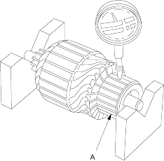
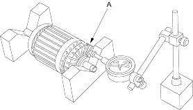
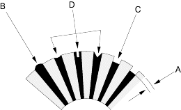
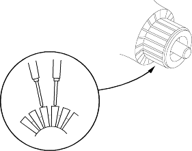

- Measure the commutator (A) runout.
- If the commutator runout is within the service limit, check the commutator for carbon dust or brass chips between the segments.
- If the commutator runout is not within the service limit, replace the armature.
Commutator Runout
D14Z6, D16V1 (KE model), D16V3 engines:
Standard (New):0.05 mm (0.002 in.) max.
Service Limit:0.4 mm (0.02 in.)
D16V1 (KG, KR, KS models) engines with A/T:
Standard (New):0.02 mm (0.001 in.) max.
Service Limit:0.05 mm (0.002 in.)
D16V1 (KG, KR, KS models) engine with M/T:
Standard (New):0.01 mm (0.0004 in.) max.
Service Limit:0.015 mm (0.0006 in.)
Except D16V1 (KG, KR, KS models) engine with M/T

D16V1 (KG, KR, KS models) engine with M/T

- Check the mica depth (A). If the mica is too high (B), undercut the mica with a hacksaw blade to the proper depth. Cut away all the mica (C) between the commutator segments. The undercut should not be too shallow, too narrow, or V-shaped (D).
Commutator Mica Depth
Except D16V1 (KG, KR, KS models) engine with M/T:
Standard (New):0.50-0.75 mm (0.020-0.030 in.)
Service Limit:0.2 mm (0.008 in.)
D16V1 (KG, KR, KS models) engine with M/T:
Standard (New):0.50-0.90 mm (0.020-0.035 in.)
Service Limit:0.2 mm (0.008 in.)

- Check for continuity between the segments of the commutator. If an open circuit exists between any segments, replace the armature.
